- Kommer du fra MacDiveHvilken fil du skal eksportere, og hvordan du skifter uden at miste noget.
- Hent fra en computerShearwater og andre Bluetooth-computere eller et kabel på Mac.
- Garmin DescentImportér .fit-filer fra uret eller Garmin Connect.
Virker noget ikke? Se Fejlfinding. Thermocline er en logbog: Den viser, hvad din dykkercomputer registrerede, og beregner aldrig dekompression.
Hent appen
Thermocline er kun til Apple-enheder: iPhone, iPad, Mac og Apple Watch. I betaperioden installeres den via Apples TestFlight-app.
| Opgave | iPhone og iPad | Mac |
|---|---|---|
| Deltag i betaen | Deltag i betaen: ét link til iPhone, iPad, Mac og Apple Watch. Åbn det på hver enhed, og installer fra TestFlight. Apple Watch-appen følger med iPhone-appen. Alle enheder deler den samme logbog via iCloud. | |
| Deltog i iPhone-betaen før 18. november 2026 | Den app er flyttet. Se skift fra den gamle iPhone-app. | |
| Hold dig opdateret | Når TestFlight tilbyder et nyt build, så opdater alle de enheder, du bruger. Et ældre build holder op med at sende ændringer, indtil det er opdateret, og siger det selv. Intet går tabt. | |
Første start og rundvisningen
Ved første start spørger appen om dit navn, dine enheder, og hvor dine dyk kommer fra. Enheder gemmes metrisk; når du ændrer dem, ændres kun visningen.
| Opgave | iPhone og iPad | Mac |
|---|---|---|
| Indstillinger | Fanen Profil | Thermocline → Indstillinger |
| Rundvisningen | Profil → Hjælp → Vis rundvisningen | Hjælp → Se rundvisningen |
Rundvisningen gennemgår hver skærm med en eksempellogbog, ikke din egen.
Skærmbillederne på denne side viser eksempellogbogen fra rundvisningen: Dykkene og dykkerstederne er opdigtede. Tryk på et for at se det i fuld størrelse.

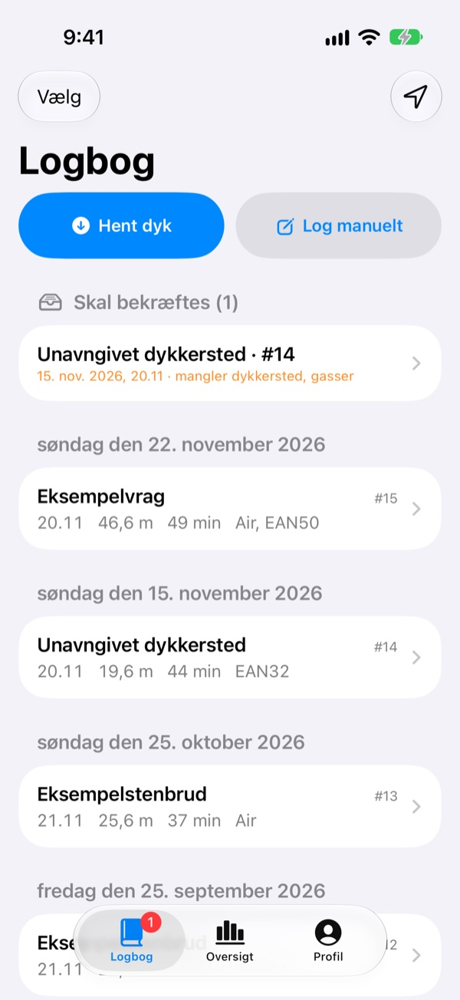
Tag din logbog med
Thermocline læser MacDive (dens mappe, XML eller UDDF), en Shearwater Cloud-database, Garmin .fit-filer, UDDF fra enhver logbog og CSV. Du vælger, hvilke dyk der tilføjes, og alt, hvad den ikke kan læse, bliver vist på en liste og aldrig udeladt i stilhed.
| Opgave | iPhone og iPad | Mac |
|---|---|---|
| Importér en fil | Profil → Dine data → Importér en logbogsfil, og vælg den derefter fra iCloud Drive eller Arkiver. | Importkommandoen i menuen Arkiv (⇧⌘I). |
| Garmin .fit-filer | Vælg flere på én gang. | Vælg flere eller en hel mappe. |
| MacDives mappe med fotos | Kun Mac. Tag fotoene med senere med Mac-appen. | Arkiv → Importér fra MacDive…, og vælg MacDives mappe: dyk, dykfotos og kortfotos. MacDives filer ændres ikke. |
| Vælg dykkene | Fjern fluebenet ved dem, du ikke vil have, og vælg derefter Importér. | |
| Fortryd en import | Gendannelsespunktet Før en import, der gemmes før enhver import af mere end ét dyk. | Fortryd import… i importrapporten eller det samme gendannelsespunkt. |
Når importen er færdig, viser en rapport, hvor mange dyk der blev tilføjet, hvilke elementer der er ikke importeret og hvorfor, og hvad du skal tjekke. Dyk, hvis fil ikke havde nogen gas, venter i Skal bekræftes.
Hvilken MacDive-fil du skal bruge
MacDive kan give dig sin XML, sin UDDF eller (på Mac) hele sin mappe. De indeholder ikke det samme:
| Hvad den indeholder | MacDive XML | MacDive UDDF | MacDive-mappe (Mac) |
|---|---|---|---|
| Dyk, dykkersteder, makkere, gasser | Ja | Ja | Ja |
| Flaskestørrelser | Ja | Nej: Dens størrelser er ikke vandvolumener, så de efterlades tomme | Ja |
| Dybdeprofiler | Alle dyk | Alle dyk | Alle undtagen dyk, som MacDive hentede på iPhone eller iPad, og som den gemmer krypteret |
| Computerens NDL og ppO₂ gennem dykket | Ja | Nej | Ja, undtagen de krypterede dyk |
| Computerens CNS | Ja | Nej | Ja |
| Udstyr, tags og dyktyper | Ja | Nej | Ja |
| Dyk- og kortfotos | Nej | Nej | Ja |
| Opgave | iPhone og iPad | Mac |
|---|---|---|
| Bedste vej | Eksportér dine dyk fra MacDive som XML, gem filen på iCloud Drive, og importér den. | Importér MacDives mappe og derefter XML-filen oven i. XML-filen udfylder profiler, NDL og ppO₂ for de krypterede dyk. |
| Har allerede importeret UDDF-filen | Importér også XML-filen. Dyk, der allerede er i din logbog, bliver matchet, ikke tilføjet igen, og kun det, der mangler, udfyldes, også flaskestørrelser. Intet, du har indtastet eller rettet, ændres. | |
Garmin Descent-ure
Et Garmin Descent gemmer én .fit-fil pr. dyk. Der er to måder at få dem på:
- Fra uret: Forbind det til Mac med dets kabel, og åbn mappen GARMIN → Activity. På Mac kan du importere hele GARMIN-mappen; filer, der ikke er dyk, f.eks. løbeture og indstillinger, springes over.
- Fra Garmin Connect: Åbn dykket, og vælg Eksporter original. Det giver en .zip-fil: Pak den ud først, og importér derefter .fit-filen i den.
Positionerne kommer fra urets GPS. På et driftdyk gemmer uret det sted, hvor du kom op, som start; importen finder det sted, hvor du faktisk gik i vandet, så dykket matches til det dykkersted. Tilføj andre vrag, du passerede, i noterne.

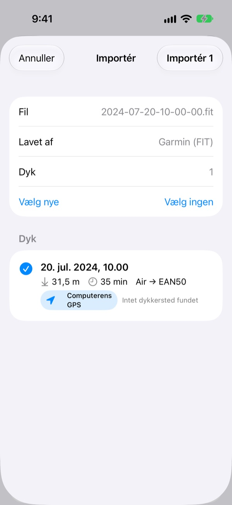
Hent dyk fra din computer
Sæt først dykkercomputeren i dens Bluetooth-tilstand. På en Shearwater: Menu → Bluetooth. Den bliver der i cirka to minutter. Kun dyk, der er nyere end din seneste hentning, hentes.
| Opgave | iPhone og iPad | Mac |
|---|---|---|
| Åbn | Logbog → Hent dyk | Arkiv → Hent fra dykkercomputer… (⇧⌘D) |
| Opret forbindelse | Bluetooth. Vælg din computer under I nærheden; første gang skal du indtaste den pinkode, der vises på dens skærm. | Vælg Bluetooth eller USB-kabel. Ved kabel skal du vælge din computers model og dens port og følge Før du starter. |
| Afslut | Fjern fluebenet ved de dyk, du ikke vil have, og vælg derefter Behold. Dyk uden flueben bliver på computeren og tilbydes igen næste gang. | Hent. |
Spørgsmålet om uret. Den første hentning fra hver computer spørger Hvilken zone er computerens ur indstillet til? De fleste computere registrerer lokal tid uden tidszone, så dette holder dine dyktider korrekte, når du rejser. Svaret huskes for den computer.
Når du har valgt dyk, kan du gå dem igennem ét ad gangen for at angive dykkersted og gasser eller vælge Gør færdig senere: De venter i Skal bekræftes.
Har du slettet et dyk og vil have det tilbage? Slå Hent alle dyk på computeren til. Det tager længere tid; dyk, der allerede er i din logbog, springes over.

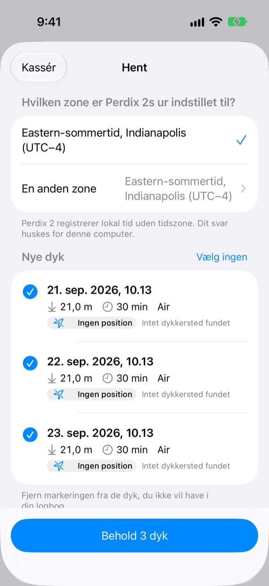
Shearwater Predator og Petrel 1
De bruger ældre Bluetooth (Bluetooth Classic), som iPhone og iPad ikke kan bruge. På Mac skal du først parre computeren i Systemindstillinger → Bluetooth og derefter vælge USB-kabel i hentevinduet: Dens port vises måske på listen. Sæt computeren i dens Bluetooth-overførselstilstand, og vælg Hent. Det er endnu ikke afprøvet på en rigtig Predator eller Petrel 1, så send gerne hentningsloggen, uanset om det virker eller ej. På iPhone kan du i stedet importere deres dyk fra Shearwater Cloud eller en UDDF-fil.
Understøttede computere
Thermocline henter med libdivecomputer, det open source-bibliotek, som mange logbøger deler. Det kender flere hundrede modeller fra de fleste producenter. For at se din skal du åbne hentningsskærmen og vælge Understøttede computere; ved hver står der, om den virker på iPhone og iPad eller kræver Mac.
| Forbindelse | Hvor den virker | Afprøvet indtil nu |
|---|---|---|
| Bluetooth LE | iPhone, iPad og Mac | Shearwater Perdix og Perdix 2. Andre modeller burde virke: Fortæl os det. |
| USB- eller seriel-kabel | Kun Mac | Bygget, endnu ikke afprøvet på rigtig hardware. |
| Bluetooth Classic (Predator, Petrel 1 og andre ældre modeller) | Kun Mac, parret som seriel port (sådan) | Endnu ikke afprøvet. |
| Garmin Descent (.fit-filer) | Import på iPhone, iPad og Mac (sådan) | Descent-dyk, også driftdyk. |
Har du en computer, vi ikke har afprøvet? Hjælp os med at teste den.
Bekræft dykkersted og gasser
Dyk, der stadig mangler et dykkersted eller bekræftede gasser, venter i Skal bekræftes. Intet forhindrer dem i at blive gemt; udfyld dem, når du har lyst.
| Opgave | iPhone og iPad | Mac |
|---|---|---|
| Find dem | Øverst i Logbog under Skal bekræftes. | Gå → Skal bekræftes (⌘2) |
| Bekræft | Åbn ét, vælg derefter Vælg et dykkersted, og tryk på Ja, disse gasser er rigtige (eller Ret gas…). | Banneret på hvert dyk tilbyder Bekræft dykkersted og gasser…, Vælg dykkersted… eller Bekræft gasser…. |
Thermocline foreslår dykkerstedet ud fra dykkets position: dine egne dykkersteder først, derefter de indbyggede lister over mere end 76.000 dykkersteder og vrag, som virker offline.

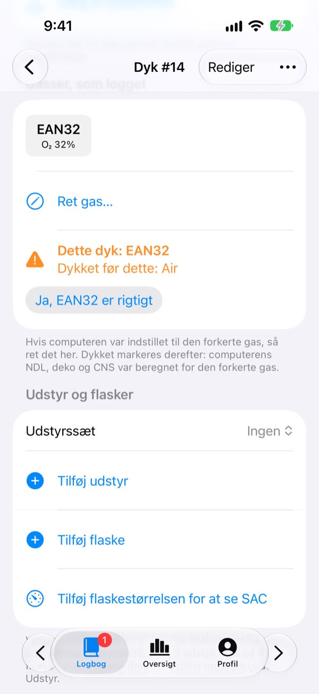
Læs et dyk
| Opgave | iPhone og iPad | Mac |
|---|---|---|
| Aflæs ethvert øjeblik | Træk hen over grafen. | Peg på grafen. |
| Log et dyk manuelt | Logbog → Log manuelt | ⌘N |
- Sikkerhedsværdier sidder i en fast bjælke øverst på hvert dyk, altid på samme sted.
- Profilen: Chips under grafen viser eller skjuler Flaske, ppO₂, NDL, SAC, Temp., CNS og Opstigning som Stablet-bjælker eller ét samlet Overlejret lag. Kun det, dykket registrerede, får en chip. NDL er computerens egen og stopper under deko, hvor det røde bånd viser stoppene. På en smal iPhone bliver chipsene på én linje og ruller sidelæns. Prøv det på forsiden.
- Rebreathere: Fra enhver computer eller fil, der registrerer dem, viser ppO₂-bjælken setpoint sammen med ppO₂ »Voted«, den værdi, computeren vælger ud fra cellerne (og hver celle, hvor det er registreret), og aflæsningen giver setpoint i det øjeblik. Et skift fra diluent til en hvilken som helst anden gas mærkes som bailout.
- Gasforbrug: Tryk eller klik på Hvordan? ved siden af SAC-tallet for at se alle værdier: flasken, dens vandvolumen, tryk, temperatur og realgaskorrektionen.
- Redigering: Du kan redigere ethvert dyk. En rettelse bevarer computerens oprindelige aflæsning.
- Bly: Det første tryk på + angiver Uden bly for et dyk uden bly. Tryk på − derfra for at rydde det.
- Links i noter: Weblinks i et dyks noter kan trykkes eller klikkes på. Når du er færdig med at skrive, så tryk på OK over tastaturet: Linkene vises da, og et YouTube- eller Vimeo-link får en knap Tilføj … til videolinks under noterne. For at skrive i noterne igen skal du vælge Rediger noter.

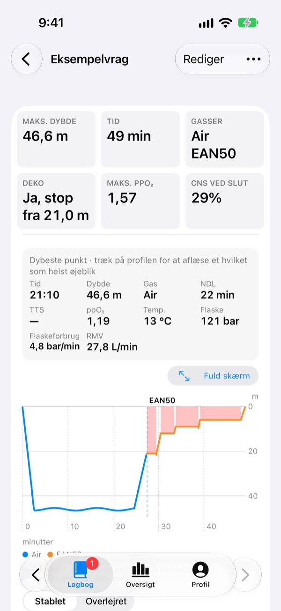

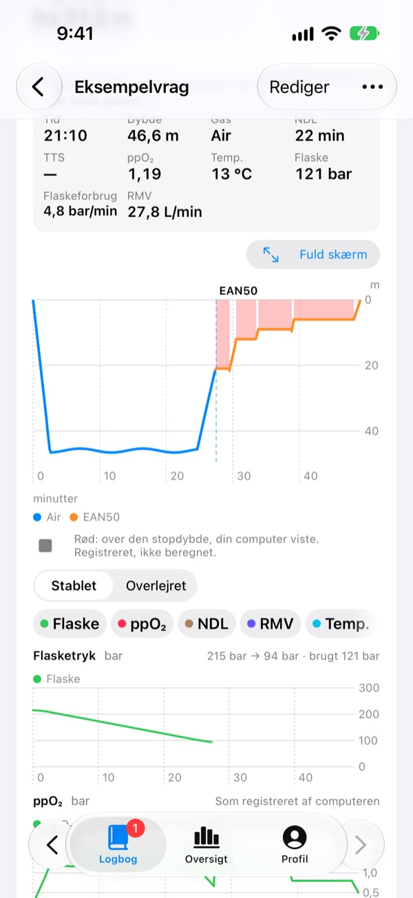


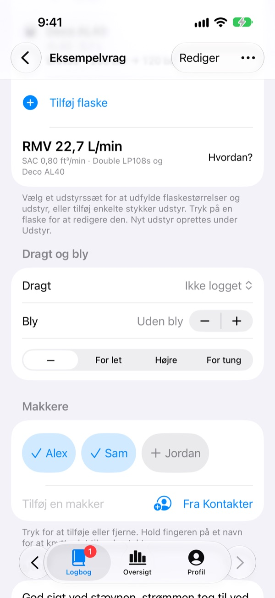

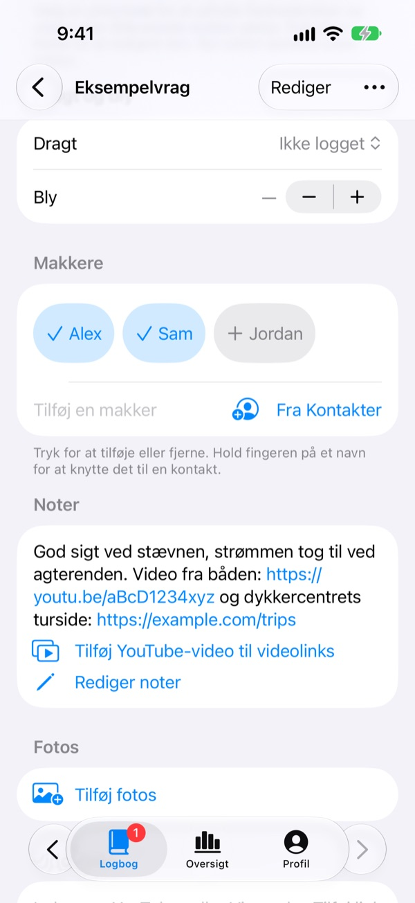

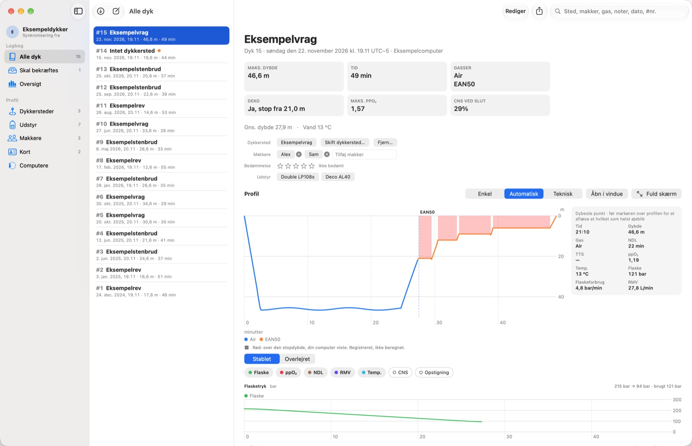
Dykkersteder, positioner og Apple Watch
| Opgave | iPhone og iPad | Mac |
|---|---|---|
| Tilføj et dykkersted | Profil → Dykkersteder, derefter tilføj-knappen: Find eller navngiv et dykkersted eller Markér punkt her (GPS). | Gå → Dykkersteder (⌘4), derefter Tilføj dykkersted… |
| Se alle dykkersteder på listerne | Profil → Dykkersteder → Kort, derefter globusknappen, eller knib sammen, til kortet er zoomet helt ud. Vrag er orange, rev og dykkersteder blå, dine egne dykkersteder røde flag. | Dykkersteder, derefter Vis globus på værktøjslinjen, eller zoom helt ud. |
| Find en position | Et dykkersted uden position tilbyder Find position: Tjek forslaget på kortet, indtast koordinater, eller sæt en nål. | Find positioner… gennemgår alle dykkersteder uden position, ét ad gangen. |
Apple Watch: Markér et punkt ved overfladen, så venter det på din iPhone i Skal bekræftes. Se Apple Watch.
Dykkersteders positioner er til logføring, ikke til navigation.

Apple Watch
Watch-appen gør én ting: Den markerer, hvor du er ved overfladen, så et dyks dykkersted er nemt at logge. Den registrerer ikke dyk; de kommer fra din dykkercomputer. Den kræver watchOS 11 eller nyere og en iPhone med Thermocline.
| Opgave | Apple Watch | iPhone |
|---|---|---|
| Installer | Den følger med iPhone-appen. Hvis den ikke er på uret, så åbn Watch-appen på din iPhone, find Thermocline under Tilgængelige apps, og tryk på Installer. Første gang skal du tillade lokalitet for Thermocline på uret. | |
| Markér et punkt | Ved overfladen, over dykkerstedet, åbner du Thermocline. Vent på Godt fix, og tryk derefter på Markér punkt. Uret banker på dit håndled, når det er gemt. | Punktet kommer af sig selv. Hvis iPhone er uden for rækkevidde, sendes det, når de er sammen igen. |
| Navngiv det | Valgfrit. Tryk på Tilføj et navn efter markeringen eller senere i Markeringer, og sig, skriv i hånden eller skriv det, f.eks. "vragets stævn". Det gemmes, når du er færdig. | Navnet tilbydes som det nye dykkersteds navn. Du kan bruge det eller vælge et andet dykkersted. |
| Bekræft det | Intet at gøre på uret. | Logbog → Skal bekræftes. iPhone slår punktet op, når den er online, foreslår det nærmeste kendte dykkersted og viser det dyk, det sandsynligvis hører til. Bekræft eller kassér det. |
| Tjek, at det blev sendt | Markeringer viser hvert punkt med Sendt til iPhone eller Venter på at blive sendt til iPhone samt et kort. Et punkt forsvinder fra uret, når det er bekræftet eller kasseret på iPhone. | Når det er bekræftet, synkroniseres dykkerstedet til dine andre enheder som alle andre. |

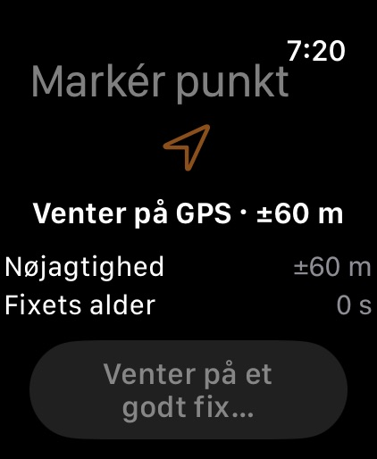

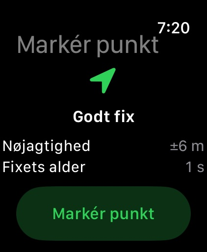

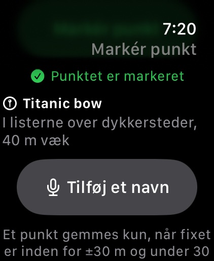

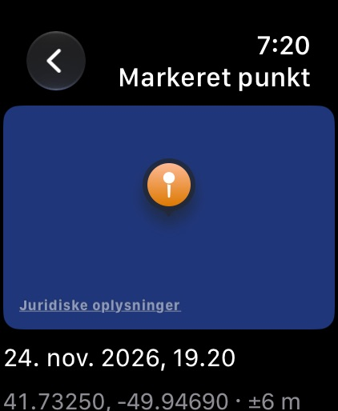
Uret gemmer kun et punkt ud fra et fix inden for ±30 m, der er under 30 sekunder gammelt, og det ignorerer en gammel gemt position. Markér det ved overfladen, ikke under vandet.
Dykkersteders positioner er til logføring, ikke til navigation.
Udstyr og flasker
| Opgave | iPhone og iPad | Mac |
|---|---|---|
| Åbn Udstyr | Profil → Udstyr | Gå → Udstyr |
- På en flaske åbner Model flaskekataloget: Søg efter producent eller model (f.eks. "PST LP104") for at udfylde dens offentliggjorte størrelser, eller indtast dine egne tal.
- Sæt flueben ved Dobbeltflaske (med manifold) for et twinset.
- En stålflaske stemplet med +: Slå Plusmærkning til, så længe den seneste trykprøvning bevarede +. Den vises f.eks. som 2400+. Denne kontakt vises, når flaskestørrelser vises i kubikfod.
- Flaskerne på hvert dyk findes under dykkets gasafsnit (Tilføj flaske, Udstyrssæt).
Flet og sammenføj dyk
- Flet er til ét dyk, der er registreret af to computere. Begge registreringer bevares, og du kan skifte mellem dem på grafen.
- Sammenføj er til ét dyk, der er delt i to af en kort tur til overfladen.
- Thermocline gør aldrig nogen af delene på egen hånd. Når den finder et sandsynligt par, tilbyder et banner øverst i logbogen at gennemgå dem.
| Opgave | iPhone og iPad | Mac |
|---|---|---|
| Gør det selv | Tryk på Vælg, vælg to dyk, og derefter Flet eller Sammenføj. | Vælg to dyk, og højreklik: Flet disse dyk… eller Sammenføj disse dyk… |
| Fortrudt | Fortryd med det samme, eller Adskil disse dyk på dykket når som helst. | |
Fotos og videolinks
- Tilføj fotos på et dyk kopierer dem fra dit bibliotek ind i logbogen.
- For at spare iCloud-plads skal du slå Synkronisering → Spar iCloud-lagerplads på dykfotos til på alle enheder. Fotos knyttes så til iCloud-fotos i stedet for at blive kopieret, og videoer fra dit bibliotek kan tilføjes. Thermocline beder kun om adgang til Fotos, når du slår dette til.
- Videolinks: Indsæt et YouTube- eller Vimeo-link under et dyks fotos. Kun linket gemmes. Et link, der allerede står i noterne, kan tilføjes derfra (se Læs et dyk).
- Den samme video på flere dyk: Vælg dykkene (på iPhone skal du først trykke på Vælg), vælg Rediger … dyk…, og tilføj linket under Videolinks. Det tilføjes til alle valgte dyk, og links, de allerede har, bevares.
Oversigt og vejrtrækning
Fanen Oversigt (Oversigt i sidebjælken på Mac) tæller din logbog op: dyk pr. år og pr. måned, dybder, gasser, rekorder, hvor du dykker, og dit mest brugte dykkersted og din mest brugte makker. Vælg et interval øverst, f.eks. ét år, og tryk på et vilkårligt tal eller en søjle for at se dykkene bag.
- Vejrtrækning viser din SAC og RMV over alle dyk i intervallet, der har en flaskestørrelse samt start- og sluttryk, vægtet efter tid og dybde. Tryk på den for at se, hvilke dyk der blev talt med.
- Nogle importerede dyk har ingen flaskestørrelse, så Vejrtrækning kan være tom i starten (se Hvilken MacDive-fil du skal bruge). Angiv flaskerne på dine dyk, i Udstyr eller på hvert dyk, så bliver den udfyldt.

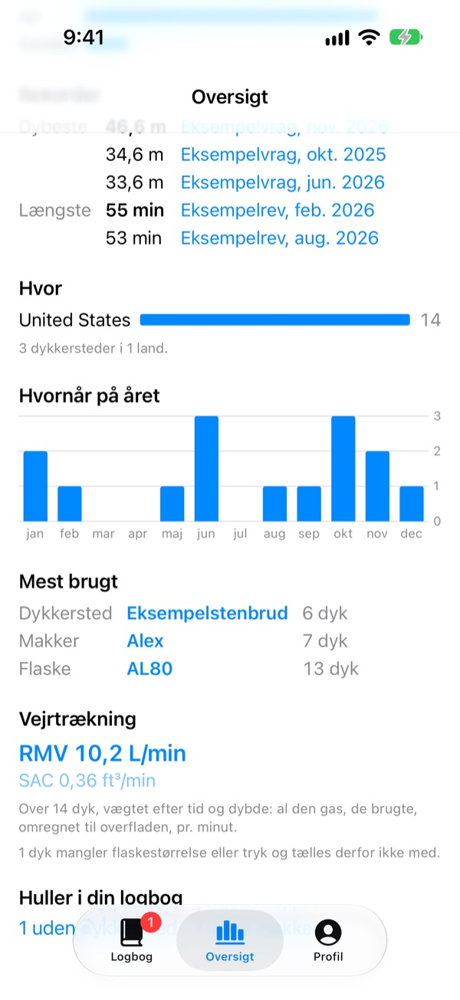
Synkroniser med iCloud
| Opgave | iPhone og iPad | Mac |
|---|---|---|
| Slå synkronisering til | Profil → Synkronisering | Thermocline → Indstillinger → Synkronisering |
Alle enheder, der er logget ind på den samme Apple-konto, deler derefter én logbog, der er gemt i din egen private iCloud. Ændringer, der foretages offline, venter på enheden og sendes, når den er online igen.
Afsnittet Synkronisering viser status, alt, der Venter på at sende, og om denne enhed og dine andre stemmer overens. Synkroniser nu tjekker med det samme.

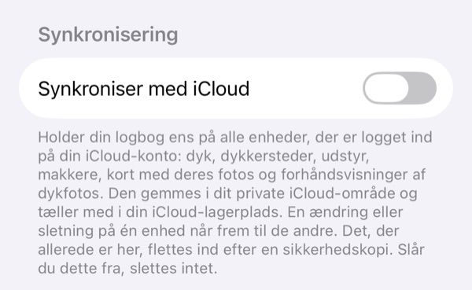
Eksport, gendannelsespunkter og sletning
| Opgave | iPhone og iPad | Mac |
|---|---|---|
| Eksport | Profil → Dine data | Menuen Arkiv |
| Gendannelsespunkter | Profil → Dine data → Gendannelsespunkter | Indstillinger → Dine data → Gendannelsespunkter |
- Eksport: UDDF er den komplette eksport og din vej ud til enhver logbog. Også tilgængeligt: et regneark (CSV), MacDive XML, bogmærker til grotteopmåling (CSV) og en erfaringsoversigt (tekst) til kursuskrav.
- Gendannelsespunkter: Der gemmes et, før synkronisering slås til, før en stor import, en fletning, en sammenføjning, en sletning af logbogen og før noget slettes. En gendannelse gemmer først din nuværende logbog som et gendannelsespunkt, så du kan fortryde den.
- Sletning: Slet logbog… tilbyder at eksportere først. Med synkronisering slået til følger dine andre enheder med.

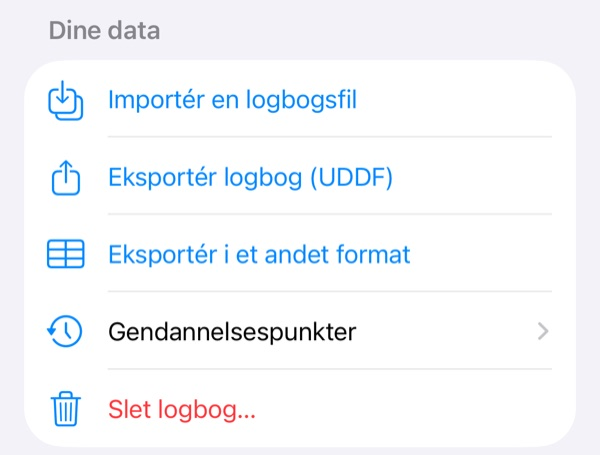
Sidder du stadig fast?
Se Fejlfinding, eller send feedback fra TestFlight eller til brian@616labs.net.